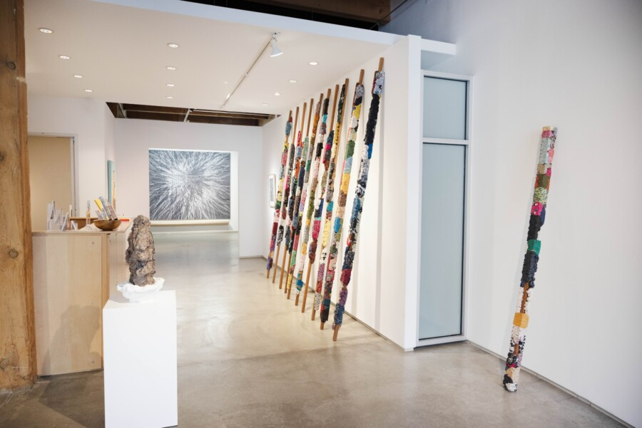

IN CELEBRATION OF SPRING: BRUNCH WITH KAVI GUPTA WITH NARIMON SAFAVI
Join us for an intimate brunch celebrating the spring season and our current exhibitions, enjoy light fare and engaging conversations. This gathering offers a quieter moment to engage with the works on view and connect with the curators in a relaxed setting. Guests will enjoy light fare and conversation while experiencing works on view within MENASA+: Thresholds of Representation, and Continuing Resistance: A Century of Black Liberation (1925–2025) up close.
Narimon Safavi is a social entrepreneur and a media personality/arts commentator with appearances on WBEZ-NPR Chicago, BBC, PBS, El Diario Vasco, and Telecinco. He is the founder of Zaryab Art Labs, an innovative art center focused on the intersection of art and technology, to be located in a historic building in downtown Chicago and scheduled to open in February 2027.
Nari attended Illinois State University, studying Chemistry and Philosophy, with a keen interest in the Philosophy of Science. His current area of exploration is the epistemology of creativity and innovation. His community engagements have included board memberships at the Siskel Film Center (Art Institute of Chicago), Harris School of Public Policy at the University of Chicago, and the Latino Film Festival of Chicago, as well as a stint as a panelist at the National Endowment for the Arts in the USA for grant approvals. Narimon speaks English and Persian fluently and is conversant in Spanish and Azari Turkish.